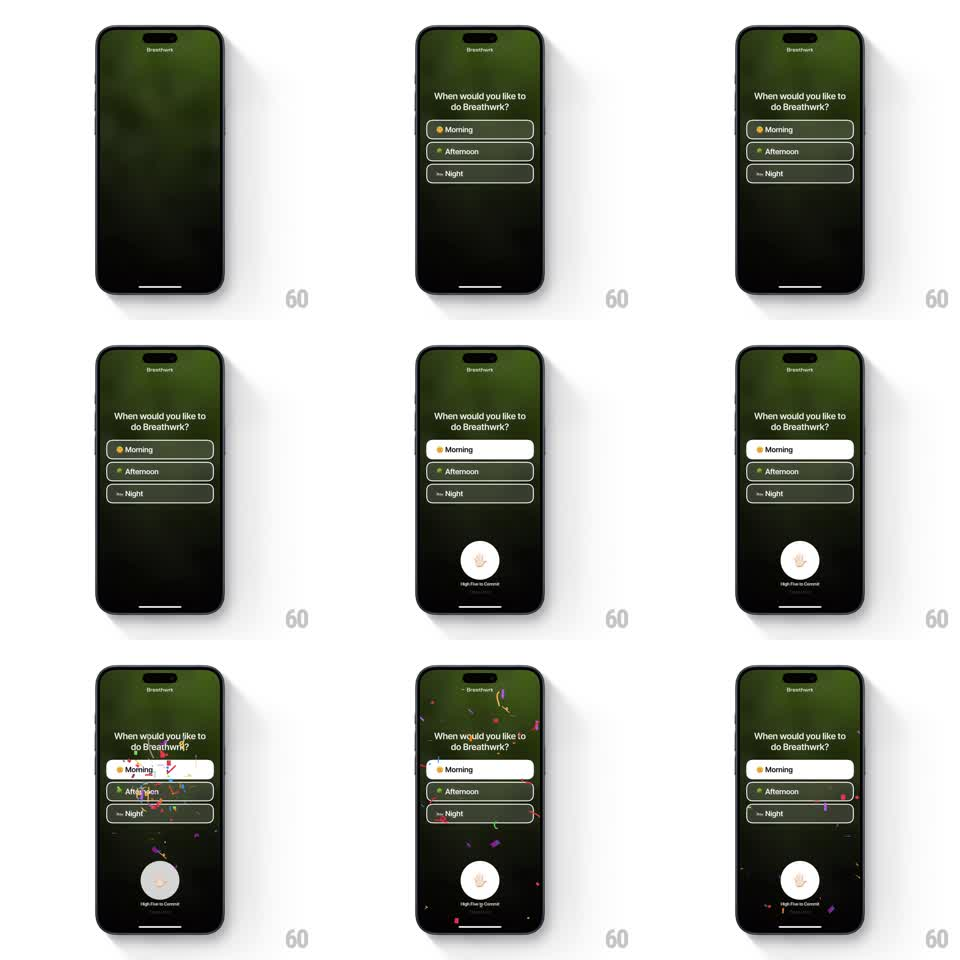

Media
Frame-by-frame

Rebuild this interaction 1:1: Breathwrk's commitment picker - choosing Morning/Afternoon/Night highlights the pill, raises a circular "High-Five to Commit" hand button from the bottom, and pressing it fires a confetti burst over the screen.

Rebuild this interaction 1:1: Breathwrk's commitment picker - choosing Morning/Afternoon/Night highlights the pill, raises a circular "High-Five to Commit" hand button from the bottom, and pressing it fires a confetti burst over the screen. ## Integration Integration: stack-agnostic spec - springs given as stiffness/damping, timed motions as duration + curve; map every value to your framework and animation library of choice. ## Scene Dark green gradient screen: "Breathwrk" wordmark top, question "When would you like to do Breathwrk?", three outlined pills (Morning with sun icon, Afternoon, Night with moon). Selected pill fills white with dark text. Commit control: a big cream circle with a hand glyph, labeled "High-Five to Commit". ## Motion spec Pattern: select -> reveal commit -> high-five confetti. - Tap an option: pill fills white (~200ms, ease-out) with a soft scale pop (1 -> 1.03 -> 1); previously selected pill reverts. - First selection: the commit circle springs up from below the screen (spring ~280/22, ~400ms, slight overshoot) and idles with a gentle pulse (scale 1 -> 1.03, 1.6s loop). - Press the circle: it scales down 0.92 under the finger, then on release pops with a haptic and fires confetti - ~60 pieces of pink/yellow/white paper erupting from the circle upward across the whole screen, gravity + rotation + drift, ~1.4s fall. - Confetti overlaps the option list - the celebration covers the question before advancing. ## Calibration - The commit circle appears only after a selection exists - it is never visible disabled. - Confetti originates from the circle, not the screen edges. ## Reduced motion Circle fades in; confetti becomes a single check pulse. ## Don't miss - Selected pill is WHITE fill on the dark green - maximum contrast flip. - The high-five press has a real press-down (scale 0.92), not just a color change.